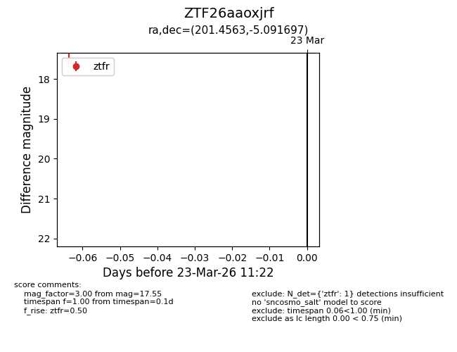
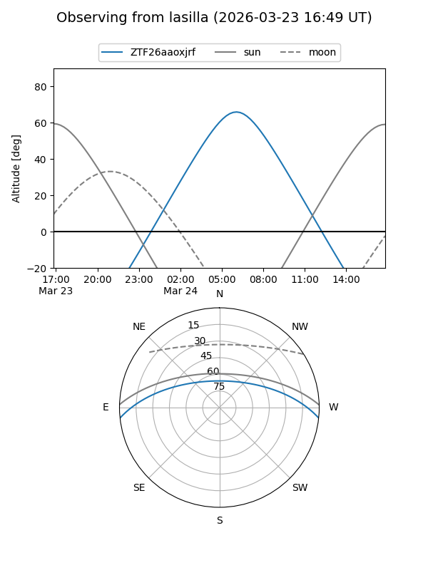
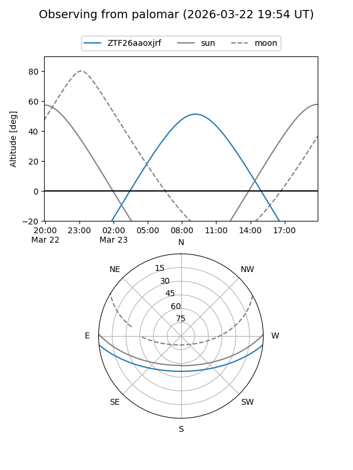

ZTF26aaoxjrf
Target ZTF26aaoxjrf at 2026-03-23 11:24
Aliases and brokers:
FINK: link
Lasair: link
ALeRCE: link
alt names
ZTF26aaoxjrf (ztf,fink_ztf)
Coordinates:
equatorial (ra, dec) = 201.4563,-5.09170
equatorial (HMS+DMS) = 13:25:49.52,-05:05:30.11
galactic (l, b) = (318.6780,+56.72508)
Flags:
Photometry:
last ztfr=17.55
1 ztfr detections
Lightcurve

Visibility


Additional plots